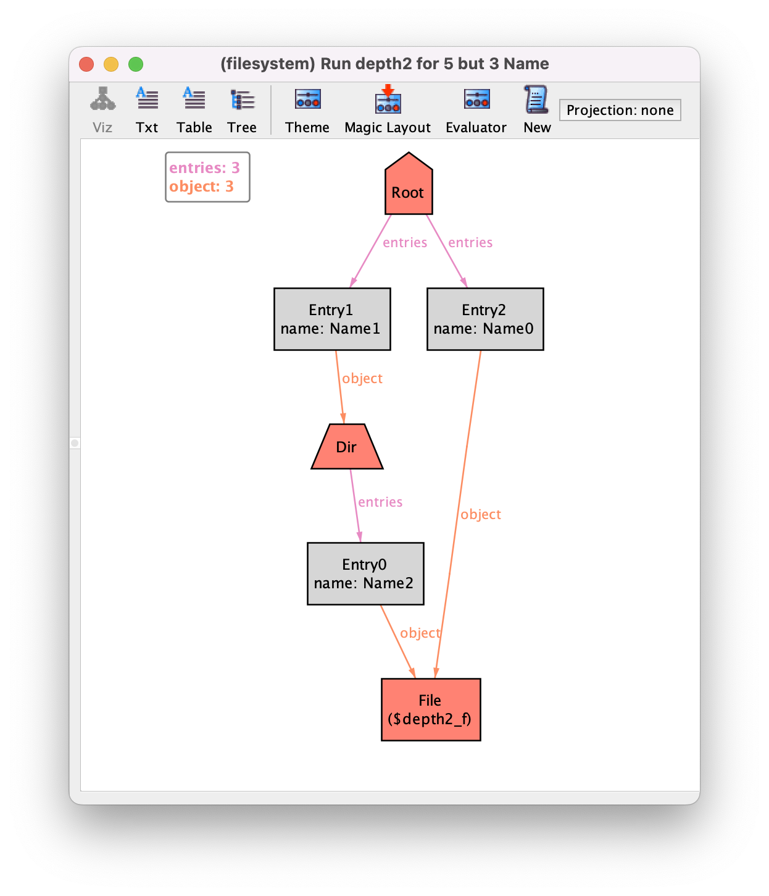

A relational logic primer#
Todo
@all: let expressions appear nowhere, introduce here or in the main chapters?
In Alloy, constraints are specified in relational logic, an extension of first-order logic with a few operators to compose relations. In this chapter we will present this logic in detail, namely detail the semantics of each of the operators, illustrated with several usage examples.
Recall the file system model from the main chapter Structural modeling, and consider the following instance of this specification to illustrate the result of relational operators throughout the chapter.
{kind=link}
Everything is a relation#
Structures are described in Alloy using only (mathematical) relations. A relation is a set of tuples of objects drawn from the universe of discourse. Every tuple in a relation must have the same size, which is known as the arity of the relation.
For example, field name is a relation of arity 2 (a binary
relation) relating entries with their names. For the above instance, it has four pairs, namely:
name = {(Entry0,Name0),(Entry1,Name2),(Entry2,Name1),(Entry3,Name1)}
In classical logic a relation is also known as a predicate, and the fact that
predicate name holds for tuple (x,y) is usually denoted
as name(x,y). As explained later, in Alloy this fact can be
denoted by x->y in name.
A set can also be represented by a relation of arity 1. In Alloy,
signatures are encoded in this way. For example, in the above
instance, signature Dir has the value:
Dir = {(Root),(Dir0),(Dir1)}
Moreover, in Alloy even the constants and (quantified) variables are
represented by relations, namely singleton relations of arity 1. A
singleton is a relation with a single tuple. For example, signature
Root, declared with multiplicity one, has the following value.
Root = {(Root)}
Do not confuse the two occurrences of the word Root in the
above definition. On the left-hand side, we have the signature
Root that was declared in our specification to denote the root of
the file system. On the right-hand side, we have the atom
Root of the universe, whose name was automatically
generated by the Analyzer to populate signature Root. The
name of this atom is actually irrelevant, but the Analyzer names
atoms using the signature name as prefix and a sequential number as
suffix. Actually, according to this naming convention, the name of
this atom is Root0, and that is the name that will be
depicted in the evaluator if you ask for the value of signature
Root. However, in the visualizer, if there is only a single
atom with a given name prefix the numeric suffix is omitted by default. Here we will use the names chosen by the visualizer.
Since atom names are arbitrary, when specifying constraints in Alloy it is impossible to refer to them directly. If we need to distinguish a particular atom of the universe, we need to declare a singleton signature that will contain that atom and refer to that signature name instead. That was precisely what we did to distinguish the root of a file system.
An instance of an Alloy specification without mutable declarations is a single snapshot with a complete valuation for all declared signatures and fields, mapping each of them to a relation of the appropriate arity. The value of all signatures and fields in our example instance is the following.
Object = {(Root),(Dir0),(Dir1),(File)}
Dir = {(Root),(Dir0),(Dir1)}
Root = {(Root)}
File = {(File)}
Entry = {(Entry0),(Entry1),(Entry2),(Entry3)}
Name = {(Name0),(Name1),(Name2)}
entries = {(Root,Entry0),(Root,Entry1),(Root,Entry2),(Dir0,Entry3)}
object = {(Entry0,File),(Entry1,File),(Entry2,Dir0),(Entry3,Dir1)}
name = {(Entry0,Name0),(Entry1,Name2),(Entry2,Name1),(Entry3,Name1)}
An instance also includes the values of the three predefined constants: none (the empty set), univ (the universe of all atoms), and iden (the identity relation on the universe). In our example instance their value is the following.
none = {}
univ = {(Root),(Dir0),(Dir1),(File),(Entry0),(Entry1),(Entry2),(Entry3),(Name0),(Name1),(Name2)}
iden = {(Root,Root),(Dir0,Dir0),(Dir1,Dir1),(File,File),(Entry0,Entry0),(Entry1,Entry1),(Entry2,Entry2),(Entry3,Entry3),(Name0,Name0),(Name1,Name1),(Name2,Name2)}
First-order logic in a nutshell#
Relational logic is an extension of first-order logic, which in turn is an extension of propositional logic. In propositional logic the simplest (atomic) formula is a proposition that checks if a Boolean variable is true. Compound formulas can be built by connecting atomic formulas using the standard logic connectives (or operators): negation, conjunction, disjunction, implication, and equivalence. These connectives are also available in Alloy’s relational logic, and their syntax is the following.
Operator |
Name |
|
Negation |
|
Conjunction |
|
Disjunction |
|
Implication |
|
Equivalence |
As you can see, Alloy has a dual syntax for these operators, one with
programming language style symbols and the other with English
words. In this book we tend to use the latter, as the resulting
formulas are more readable. The implies operator can also
have an optional else to state what should be true when the
condition on the left-hand side is false. Given arbitrary formulas
P, Q, T, P implies Q else T is the
same as (P and Q) or (not P and T).
In first-order logic we have a domain of discourse (or universe), and
propositions are generalized by predicates that relate elements of
this domain. Formulas can also be built using variables quantified
over this domain. There are two standard quantifiers: the universal
quantifier ∀ x . P checks if a formula P (possibly
referring to variable x) is true for all x in the
domain; and the existential quantifier ∃ x . P checks if a
formula P (possibly referring to variable x) is true
for some x in the domain. In Alloy all quantifications are
bounded by a set, and English words are
used instead of the standard mathematical notation. The following
table presents all quantifiers that are available in Alloy: A
is denotes an arbitrary set (a unary relation) and P an arbitrary
formula. The first two are the standard universal and existential
quantifiers.
Quantifier |
Informal meaning |
|
|
|
|
|
|
|
|
|
|
It is well known that the existential quantifier can be specified with
the universal one, and vice-versa, and the same is true for all other
Alloy quantifiers. For example, some x : A | P is the same as
not (all x : A | not P) and no x : A | P is the same
as all x : A | not P.
Alloy’s rule that everything is a relation also applies to quantified variables:
the quantified x that can be referred in P is a unary relation
containing a single tuple with an atom of the universe. It is also possible to
quantify more than one variable at once, as in all x,y : A | P or
all x : A, y : B | P. In the latter, the expression B can also
refer to the first quantified variable x. It is also possible to add
keyword disj to quantify over all different values of the bound
variables. For example, writing all disj x,y : A | P abbreviates
all x,y : A | x != y implies P.
Todo
multiple bound variables at once
translation of lone one no
difference (or not) between one x,y:A / one x:A,y:A / one x:A|one y:A
Besides predicates, first-order logic also allows functions as
non-logical symbols. Given some parameters a function returns an
element of the domain. Since in Alloy the atoms of the universe are
mostly uninterpreted there are very few predefined functions. The
exception is when using integers, for which we have the standard arithmetic
operations. If we do not consider functions, atomic formulas in
first-order logic just check for equality of (quantified) variables or
if a tuple of (quantified) variables satisfies (or is a member of) a
predicate. In Alloy’s relational logic we have a few more atomic
formulas, that are described in the following table, where R
and S are arbitrary relations of the same arity, including
sets.
Atomic formula |
Informal meaning |
|
|
|
|
|
|
|
|
|
|
|
|
The negation of the subset or equality atomic formulas can also be
written by placing the negation operator next to the comparison
operator. For example, instead of not (R in S) it is possible
to write R not in S or R !in S.
Since quantified variables are also (singleton) relations, although in
stands for the ‘subset or equal’ operator (⊆) it can also be used to
check set membership (∈). As we will see below, given
variables x₁, …, xₐ, it is possible to define
expression x₁->…->xₐ that denotes a relation with a single
tuple with those variables. Formula x₁->…->xₐ in R can then
be used to check that this tuple belongs to a relation R with
arity a, something that in the standard mathematical notation
of first-order logic is written as R(x₁,…,xₐ). Recall that,
besides equality checks between variables, such membership checks are
the only atomic formulas in first-order logic. Although Alloy also
allows all the above ones, they all can be written using just these
basic checks, so technically they do not add expressive power to
first-order logic, but just a more succinct way to write formulas. The
following table provides such formal definitions, assuming R
and S have arity a.
Atomic formula |
Formal meaning |
|
|
|
|
|
|
|
|
|
|
|
|
As we can see, the reduction in formula size can be substantial. For
example, to formalize the requirement that “every file is an object”,
in plain first-order logic we would have to write ∀ x . File(x)
→ Object(x) or, in Alloy’s notation, all x : univ | x in File
implies x in Object. However, with Alloy’s relational logic we can
just write File in Object.
It is important to always recall that in denotes the subset
operator and not the membership test. Of course, if we are certain
that the expression on the left-hand side is a singleton (a set
with a single tuple), in behaves like membership. For
example, to test that Root is a Dir we can write
Root in Dir. However, if the expression on the left-hand
side does not necessarily denote a singleton, this check may not
work as expected. For example, if Root was declared with
multiplicity lone instead of one, the check
Root in Dir will also be true if Root is empty. In
this case, to be certain to test for membership you also need to
check that the left-hand expression is non-empty, as follows.
some Root and Root in Dir
Relational operators#
As all the alternative atomic checks, most of the relational operators in Alloy do not technically add expressive power to first-order logic, but just a more succinct alternative to write formulas. The full list of operators is presented below.
Operator |
Name |
|
Union |
|
Intersection |
|
Difference |
|
Composition, Dot join |
|
Box join |
|
(Cartesian) Product |
|
Domain restriction |
|
Range restriction |
|
Override |
|
Transpose, Converse |
|
Transitive closure |
|
Reflexive transitive closure |
These operators act like combinators, that can be used to put together relations
(predicates) to obtain expressions denoting more complex relations. The
most basic operators are the standard set operators of union,
intersection, and difference. For example, given predicates
File and Dir we can compose them with union to obtain
the derived predicate File + Dir that can be used to directly
check if an element is either a file or a directory. This simplifies
the writing of requirements such as (the redundant) “every object is either a file or
a directory”. In plain first-order logic we would write (using Alloy’s syntax):
all x : Object | x in File or x in Dir
By using the union operator we can simplify this to:
all x : Object | x in File + Dir
And finally by using the subset operator we can write just:
Object in File + Dir
Below we present the formal semantics of all relational operators in terms of plain first-order logic. The formula in the right column formally specifies when a tuple belongs to an expression that uses each operator. To abbreviate, in this formula all variables are implicitly universally quantified over the universe. Notice that some of these operators (namely the transpose and the closure operators) are only defined for binary relations.
Operator |
Formal meaning |
|
|
|
|
|
|
|
|
|
|
|
|
|
|
|
|
|
|
|
|
|
|
|
|
Below we illustrate each operator with examples based on the file system specification presented above.
Composition#
The entries inside the root
Root.entries = {(Root)}.{(Root,Entry0),(Root,Entry1),(Root,Entry2),(Dir0,Entry3)} = {(Entry0),(Entry1),(Entry2)}
The names of the entries inside the root
Root.entries.name = {(Entry0),(Entry1),(Entry2)}.name = {(Entry0),(Entry1),(Entry2)}.{(Entry0,Name0),(Entry1,Name2),(Entry2,Name1),(Entry3,Name1)} = {(Name0),(Name2),(Name1)}
The binary relation between directories and the contained objects
entries.object = {(Root,Entry0),(Root,Entry1),(Root,Entry2),(Dir0,Entry3)}.{(Entry0,File),(Entry1,File),(Entry2,Dir0),(Entry3,Dir1)} = {(Root,File),(Root,Dir0),(Dir0,Dir1)}
Non-empty directories
entries.Entry = {(Root,Entry0),(Root,Entry1),(Root,Entry2),(Dir0,Entry3)}.{(Entry0),(Entry1),(Entry2),(Entry3)} = {(Root),(Dir0)}
Set operators#
All directories except the root
Dir - Root = {(Root),(Dir0),(Dir1)} - {(Root)} = {(Dir0),(Dir1)}
The directories inside the root
Root.entries.object & Dir = Root.{(Root,File),(Root,Dir0),(Dir0,Dir1)} & Dir = {(File),(Dir0)} & {(Root),(Dir0),(Dir1)} = {(Dir0)}
Cartesian product#
All possible associations between files and names
File->Name = {(File)} -> {(Name0),(Name1),(Name3)} = {(File,Name0),(File,Name1),(File,Name3)}
Domain and range restriction#
The identity relation on objects
Object <: iden = {(Root),(Dir0),(Dir1),(File)} <: {(Root,Root),(Dir0,Dir0),(Dir1,Dir1),(File,File),(Entry0,Entry0),(Entry1,Entry1),(Entry2,Entry2),(Entry3,Entry3),(Name0,Name0),(Name1,Name1),(Name2,Name2)} = {(Root,Root),(Dir0,Dir0),(Dir1,Dir1),(File,File)}
Override#
A modified entries relation where all files are removed from the root directory
entries ++ (Root -> (Root.entries & object.Dir)) = entries ++ (Root -> ({(Root)}.{(Root,Entry0),(Root,Entry1),(Root,Entry2),(Dir0,Entry3)} & object.Dir)) = entries ++ (Root -> ({(Entry0),(Entry1),(Entry2)} & object.Dir)) = entries ++ (Root -> ({(Entry0),(Entry1),(Entry2)} & {(Entry0,File),(Entry1,File),(Entry2,Dir0),(Entry3,Dir1)}.{(Root),(Dir0),(Dir1)})) = entries ++ (Root -> ({(Entry0),(Entry1),(Entry2)} & {(Entry2),(Entry3)})) = entries ++ (Root -> {(Entry2)}) = entries ++ ({(Root)} -> {(Entry2)}) = entries ++ ({(Root,Entry2)}) = {(Root,Entry0),(Root,Entry1),(Root,Entry2),(Dir0,Entry3)} ++ ({(Root,Entry2)}) = {(Root,Entry2),(Dir0,Entry3)}
Transpose#
The binary relation between objects (contained in directories) and their name
~object.name = ~{(Entry0,File),(Entry1,File),(Entry2,Dir0),(Entry3,Dir1)}.{(Entry0,Name0),(Entry1,Name2),(Entry2,Name1),(Entry3,Name1)} = {(File,Entry0),(File,Entry1),(Dir0,Entry2),(Dir1,Entry3)}.{(Entry0,Name0),(Entry1,Name2),(Entry2,Name1),(Entry3,Name1)} = {(File,Name0),(File,Name2),(Dir0,Name1),(Dir1,Name1)}
The binary relation between entries in the same directory
~entries.entries = ~{(Root,Entry0),(Root,Entry1),(Root,Entry2),(Dir0,Entry3)}.{(Root,Entry0),(Root,Entry1),(Root,Entry2),(Dir0,Entry3)} = {(Entry0,Root),(Entry1,Root),(Entry2,Root),(Entry3,Dir0)}.{(Root,Entry0),(Root,Entry1),(Root,Entry2),(Dir0,Entry3)} = {(Entry0,Entry0),(Entry0,Entry1),(Entry0,Entry2),(Entry1,Entry0),(Entry1,Entry1),(Entry1,Entry2),(Entry2,Entry0),(Entry2,Entry1),(Entry2,Entry2),(Entry3,Entry3)}
The binary relation between entries sharing names
name.~name = {(Entry0,Name0),(Entry1,Name2),(Entry2,Name1),(Entry3,Name1)}.~{(Entry0,Name0),(Entry1,Name2),(Entry2,Name1),(Entry3,Name1)} = {(Entry0,Name0),(Entry1,Name2),(Entry2,Name1),(Entry3,Name1)}.{(Name0,Entry0),(Name2,Entry1),(Name1,Entry2),(Name1,Entry3)} = {(Entry0,Entry0),(Entry1,Entry1),(Entry2,Entry2),(Entry2,Entry3),(Entry3,Entry2),(Entry3,Entry3)}
Closures#
The binary relation between a directory and the objects contained in that directory or any sub-directory
^(entries.object) = ^{(Root,File),(Root,Dir0),(Dir0,Dir1)} = {(Root,File),(Root,Dir0),(Root,Dir1),(Dir0,Dir1)}
All objects in the file system
Root.*(entries.object) = Root.(^(entries.object) + iden) = Root.({(Root,File),(Root,Dir0),(Root,Dir1),(Dir0,Dir1)} + iden) = {(Root)}.{(Root,File),(Root,Dir0),(Root,Dir1),(Dir0,Dir1),(Root,Root),(Dir0,Dir0),(Dir1,Dir1),(File,File),(Entry0,Entry0),(Entry1,Entry1),(Entry2,Entry2),(Entry3,Entry3),(Name0,Name0),(Name1,Name1),(Name2,Name2)} = {(Root),(Dir0),(Dir1),(File)}
Set comprehension#
The binary relation between directories and the contained objects
{ d : Dir, o : Object | some d.entries & object.o } = {(Root,File),(Root,Dir0),(Dir0,Dir1)}
Pre-defined relational constants#
There are three predefined (relational) constants in Alloy:
none, that denotes the empty set.univ, the set of all atoms in all signatures.iden, the binary relation that associates each atom inunivto itself.
It is important to know that iden relates every element of univ to itself. This means that, for example, to check that a binary relation R (defined on a signature A) is reflexive it is not correct to write iden in R, as iden will not only contain elements in A but also elements in other declared top-level signatures. To obtain the identity relation on signature A we could, for example, intersect it with the binary relation containing all pairs of elements drawn from A, computed with the Cartesian product operator ->, as follows: iden & (A -> A). We could also use the domain restriction operator for the same effect: A <: iden filters relation iden to obtain only the pairs whose first element belongs to A. Dually, we could have restricted the range: iden :> A filters relation iden to obtain only the pairs whose last element belongs to A. Thus, to check that the relation R is reflexive we could write, for example, (A <: iden) in R.
Another thing to recall is that none denotes the empty set and is a unary relation. So, if we write R = none, to check if R is empty, we will get a type error since the relations have different arities (none is unary and R is binary). The empty binary relation is denoted by the Cartesian product none -> none: this expression denotes the empty set like none, but for the type system it is a binary relation, so writing R = (none -> none) does not raise a type error. Of course, a simpler way to check that R is empty is to write no R, since the cardinality check keywords like no can be used with relational expressions of arbitrary arity.
Alloy vs. classical logic nomenclature#
Although Alloy is a formal language based on first-order logic, there are some nuances in the nomenclature that differ from that of traditional logic.
When reasoning about semantics in logic, an instance (or interpretation) of a formula is usually known as a model: a model of a formula defines a domain (or universe) of discourse and a valuation of its non-logical symbols that makes the formula true. In contrast, in Alloy the term model is frequently used to denote the specification of a system, and the term instance is used to denote a satisfying universe and valuation. In particular, the Analyzer processes models (and the commands defined within) and generates instances (when the problem is satisfiable). This use of the term model in Alloy parlance is consistent with other techniques and languages for software design, namely the Unified Modeling Language, where a software model is precisely the kind of artefact we have been denoting by a specification.
Another concept that has a different meaning in the Alloy language than in
classical logic is that of predicate and function. In first-order logic
(also known as predicate logic), predicates and functions are non-logical
symbols of arbitrary arity for which an interpretation must be provided when
evaluating a formula. Their counter-part in Alloy are the free relations of a
model that arise from the signature and field declarations. In contrast,
predicates (pred) and functions (fun) in Alloy models are
merely re-usable parametrisable formulas and expressions, respectively, and do
not introduce any new free variables.